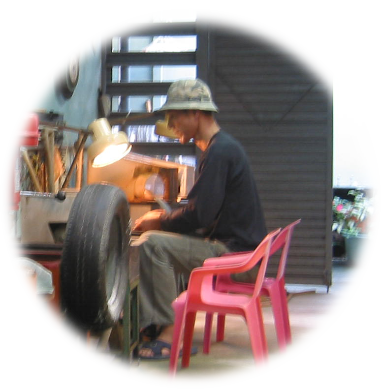

石中玉工作室簡介
石中玉工作室～東海岸玉石文化傳承的推手

「石中玉工作室」創立於民國八十年，座落於花蓮東海岸秀姑巒溪出海這裡遠離塵囂，靠山面海，是一處適合沉澱心神、雕琢玉石的所在。
這裡記錄者作者蟄居太平洋東岸近三十年的心路歷程，因緣之際認識了當地玉石之美，並積極推廣花蓮--東海岸“本土玉石文化“，作者在此扎根，落實在地文化教育傳承，期盼有朝一日能將台灣玉石之美，推展到國際舞台，讓更多人認識台灣這塊寶島，所蘊育出的寶藏。
工作室所用玉材皆取自台灣東部山脈，每一塊玉都獨一無二。經挑選、設計、雕琢、拋光，不靠大量機具，不仰賴流水線，我們用雙手慢慢聽它說話，只求保留原石神韻，一刀一鑿，只為展現玉之本質。
「玉不琢，不成器」
在這裡，我們不趕時、不取巧，只求每件作品皆有生命、有溫度、有故事。
石中藏玉，玉中藏心。
這裡，是石與人一同修行的地方。
沒有華麗的展示，只有陽光、木桌與沉默的石頭，
但你若停下腳步，
也許能看見那一絲靈光——藏在玉裡，也藏在心裡。
這裡記錄者作者蟄居太平洋東岸近三十年的心路歷程，因緣之際認識了當地玉石之美，並積極推廣花蓮--東海岸“本土玉石文化“，作者在此扎根，落實在地文化教育傳承，期盼有朝一日能將台灣玉石之美，推展到國際舞台，讓更多人認識台灣這塊寶島，所蘊育出的寶藏。
工作室所用玉材皆取自台灣東部山脈，每一塊玉都獨一無二。經挑選、設計、雕琢、拋光，不靠大量機具，不仰賴流水線，我們用雙手慢慢聽它說話，只求保留原石神韻，一刀一鑿，只為展現玉之本質。
「玉不琢，不成器」
在這裡，我們不趕時、不取巧，只求每件作品皆有生命、有溫度、有故事。
石中藏玉，玉中藏心。
這裡，是石與人一同修行的地方。
沒有華麗的展示，只有陽光、木桌與沉默的石頭，
但你若停下腳步，
也許能看見那一絲靈光——藏在玉裡，也藏在心裡。
工作室環境

上帝把賜給我們的寶藏隱藏石中，
石中有玉，
石中玉工作室因而誕生。
石中有玉，
石中玉工作室因而誕生。
創作天地
以下為作者的玉石創作場景，請各位先進多多指教。
歡迎來到石中玉工作室
作者將鉅述後山無數尋寶傳奇。
我們致力於傳承與創新玉石藝術，從東海岸的原石尋寶到雕刻與創作，
期待與您一起發現藏在石中的寶藏。
聯絡我們
台11線 東海岸線上。 聯絡電話：0933-798966 0910-123893